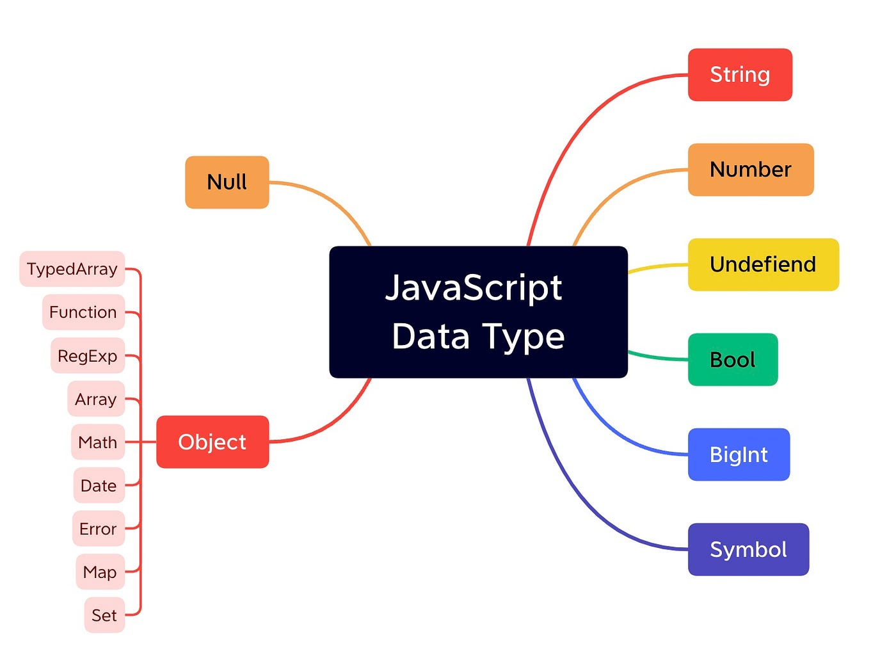
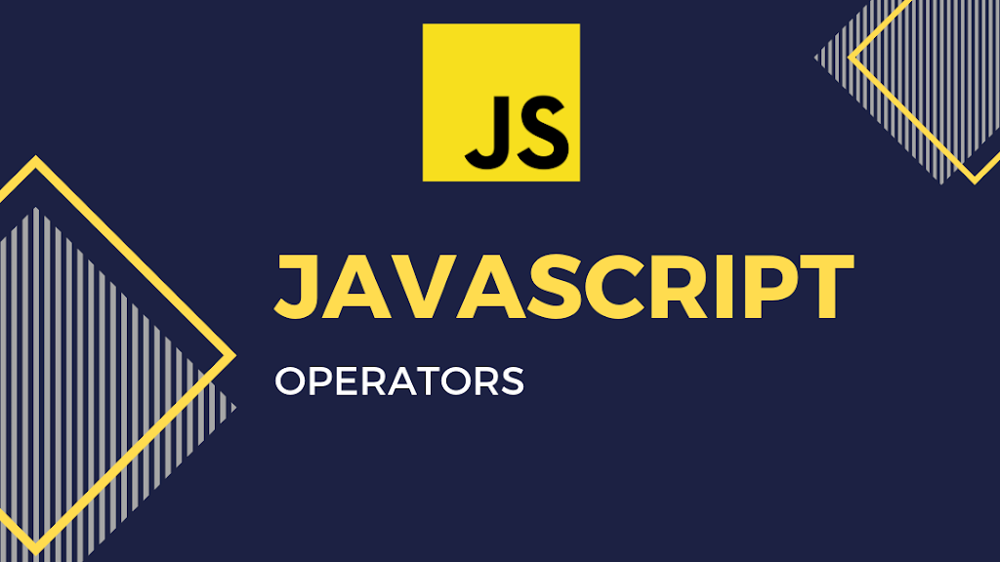
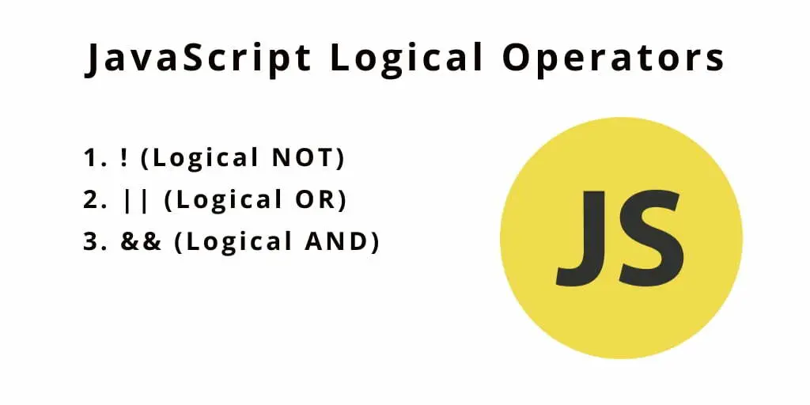

Саме тут почнеться вивчення основ JavaScript!
Ласкаво просимо до вивчення основ JavaScript!
Тут ти знайдеш усе необхідне для твого успішного поглиблення в
програмуванні. Кожна тема супроводжується невеликим тестом, що
допоможе закріпити твої знання.
Не бійся помилок — це нормально. Вони тобі лише допоможуть стати
кращим. Вивчати щось нове це завжди добре. Це тівй ключ до
успіху!
Бажаємо тобі успіхів у вивченні JavaScript!
Section #1 Змінні
JavaScript (або скорочено JS) — це повноцінна динамічна мова програмування, яка застосовується до HTML документу та може забезпечити динамічну взаємодію на веб-сайтах. Її розробив Брендан Айк, співзасновник проекту Mozilla, Mozilla Foundation та Mozilla Corporation.

JavaScript неймовірно універсальний і дружелюбний до новачків. З великим досвідом ви зможете створювати ігри, анімовану 2D і 3D графіку, повномасштабні додатки з базами даних та багато іншого!
JavaScript сам по собі досить компактний, і при цьому дуже гнучкий. Розробниками написано велику кількість інструментів поверх основної мови JavaScript, які розблоковують велику кількість додаткових функцій з дуже невеликими зусиллями.
Змінні
Змінні — це контейнери, всередині яких ви можете зберігати значення. Ви розпочинаєте з того, що оголошуєте змінну за допомогою ключового слова var (не рекомендується, продовжуйте читати, щоб отримати пояснення) або let, за яким слідує будь-яке ім'я, яким ви захочете її назвати:
let myVariable;
Тепер можна помістити в неї дані (іншими словами, визначити змінну), використовуючи оператор присвоєння = :
myVariable = "Bob";
або ж написати код компактніше
var
myVariable = "Bob";
Після визначення значення змінної ви можете змінити його пізніше:
myVariable = 'Steve';
Тепер змінна myVariable містить таке значення 'Steve'
Типи даних

String
Послідовність тексту, відома як рядок. Щоб
вказати, що це значення є рядком, ви повинні обгорнути його
лапками.
var myVariable = 'Bob';
Number
Числа. Числа не мають лапок навколо них.
var myVariable = 10;
Boolean
Значення True (Правда)/False (Брехня). Слова true і false — це
спеціальні ключові слова в JS і не потребують лапок.
var myVariable = true;
Array
Масив, який дозволяє зберігати кілька значень в одному посиланні.
var myVariable = [1, 'Bob', 'Steve', 10];
Звертатися до кожного елементу масиву можна так: myVariable[0], myVariable[1], і так далі.
Object
В принципі, все що завгодно. Все в JavaScript є об'єктом і може
бути збережено у змінній. Майте це на увазі, поки ви вивчаєте.
var myVariable = document.querySelector('h1');
Все з раніше наведених прикладів.
Оператори в мові JavaScript

Додавання(конкантинація)
Використовується для
додавання двох чисел або рядків
Символ: +
6 + 9;
"Hello " + "world!";
Віднімання, множення, ділення
Використовується як і в
класичній математиці
Символи: -,*,/
6 * 9;
6 - 9;
6 / 9;
Присвоєння
Використовується для присвоєння змінній
значення
Символ: =
var myVariable = "Bob";
== (оператор нестрогого рівняння): порівнює значення без
звертання до типів даних. JavaScript може провести автоматичне
приведення типів, якщо типи операндів відрізняються.
Приклад:
5 == "5" // true, тому що JavaScript автоматично перетворює рядок в число для порівняння
Дорівнює(оператор строгого рівняння)
Використовується
для перевірки двох значень на рівність. Повертає
true/false(Boolean).Воно не проводить автоматичне приведення
типів, і обидва операнди повинні бути одного і того ж типу для
отримання true.
Символ: ===
var myVariable = 3;
myVariable === 4;
false;
Логічні оператори

Заперечення
Повертає логічно протилежне значення, яке
йому передує; перетворює true в false і таке інше. Коли
використовується разом з оператором рівності, оператор заперечення
перевіряє, чи два значення не є рівними.
Символ: !, ==!
Основний вираз - true, але порівняння повертає false, оскільки ми його заперечуємо:
var myVariable = 3;
!(myVariable === 3);
false
Тут ми перевіряємо "myVariable НЕ рівно 3". Це повертає false, оскільки myVariable рівне 3.
var myVariable = 3;
myVariable !== 3;
false
Примітка:
Змішування типів даних може призвести до деяких неочікуваних
результатів при виконанні обчислень, тому будьте обережні,
правильно посилаючись на ваші змінні, щоб отримувати очікувані
результати. Наприклад, введіть "35" + "25" у вашу консоль. Чому ви
не отримали результат, який очікували? Тому що лапки перетворили
числа на рядки, отже, вас насправді чекає конкатенація рядків, а
не додавання чисел. Якщо ви введете 35 + 25, то отримаєте
правильний результат.
Логічний оператор "або"
в JavaScript представлений
символом ||. Використовується для виразів, що повертають true,
якщо хоча б один із умов вираження є true.
"var result = (5 > 3) || (10 < 5);"
true
Логічний оператор "і"
в JavaScript представлений
символом &&. Використовується для виразів, що повертають true,
лише якщо обидві умови вираження є true.
var result = (5 > 3) && (10 < 5);
false
Section #2 Умовне розгалуження

Умови
Це конструкції в коді, які дозволяють перевірити, чи є вираз
істинним чи хибним, і виконати інший код залежно від отриманого
результату. Найбільш розповсюдженою формою умови є конструкція if
... else.
var iceCream = "chocolate";
if (iceCream === "chocolate") {
alert("Yay, I love chocolate ice cream!");
} else {
alert("Awwww, but chocolate is my favorite...");
}
Вираз всередині if ( ... ) — це перевірка, яка використовує оператор строгого рівності (як описано вище), щоб порівняти змінну iceCream із рядком "chocolate" і перевірити, чи вони ідентичні. Якщо це порівняння повертає true, виконується перший блок коду. В іншому випадку цей код пропускається, і виконується другий блок коду після інструкції else.
Якщо вираз всередині if буде дорівнювати нулю або одиниці, то цей блок не буде виконуватись ніколи, або ж навпки буде робити це завжди
if (0) { // 0 is falsy
...
}
if (1) { // 1 is truthy
...
}
Блок "else"
Інструкція if може містити необов'язковий блок "else" (інакше). Цей блок виконується, коли умова if є хибною (false).
if (age > 18) {
accessAllowed = true;
} else {
accessAllowed = false;
}
Деколи важливо перевірити кілька варіантів умови. Для цього використовується блок else if.
var score = 75;
if (score >= 90) {
console.log("Відмінно");
} else if (score >= 70) {
console.log("Добре");
} else if (score >= 50) {
console.log("Задовільно");
} else {
console.log("Незадовільно");
}
Цикли
У JavaScript існують різні види циклів, такі як for, while, і do...while, які дозволяють вам виконувати блок коду кілька разів. Цикли зручні, якщо ви хочете запускати один і той самий код знову і знову, кожен раз з іншим значенням.
Цикл «while»
У цьому циклі, блок коду буде
виконуватися, доки умова залишається істинною. У разі, якщо умова
вже на початку не є істинною, блок коду не виконається жодного
разу.
Цикл while має наступний синтаксис:
while (condition) {
// код
}
Код з тіла циклу виконується, поки умова condition є істинною.
let i = 0;
while (i < 3) { // выводит 0, затем 1, затем 2
alert( i );
i++;
}
Один виклик тіла циклу у наукових термінах називається ітерацією.
У цьому циклі, зазначеному вище, здійснюється три ітерації.
Якщо б рядок i++ був відсутній у вищенаведеному прикладі, то цей
цикл, в теорії, виконувався б безкінечно. На практиці, звісно,
браузер не дозволить цьому відбутися і надасть користувачеві
можливість зупинити «завислий» скрипт, а JavaScript на сервері
доведеться припинити процес.
Будь-який вираз чи змінна може бути умовою циклу, не лише
порівняння: умова циклу while обчислюється і перетворюється в
логічне значення.
Цикл "do...while"
Перевірку умови можна розмістити під тілом циклу, використовуючи
спеціальний синтаксис do...while:
do {
// тіло цикла
} while (condition);
Цикл спочатку виконає тіло, а потім перевірить умову condition, і
доки її значення рівне true, він буде виконуватись знову і знову.
Наприклад:
let i = 0;
do {
alert( i );
i++;
} while (i < 3);
Такий синтаксис виправданий, якщо ви хочете, щоб тіло циклу виконалося хоча б один раз, навіть якщо умова виявиться хибною. На практиці, частіше використовується форма з передумовою: while (...) { ... }.
Цикл "for"
Більш складний, але при цьому
найпоширеніший цикл - це цикл `for`. Виглядає він наступним чином:
for (початок; умова; крок) {
// ... тіло циклу ...
}
Давайте проаналізуємо кожну частину на прикладі. У цьому циклі викликається alert(i) для i від 0 до (не включаючи) 3:
for (let i = 0; i < 3; i++) {
alert(i);
}
Всього ми розглянули 3 типи циклів:
- while: Перевіряє умову перед кожною ітерацією.
- do..while: Перевіряє умову після кожної ітерації.
- for: Перевіряє умову перед кожною ітерацією і надає можливість задати додаткові налаштування.